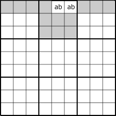
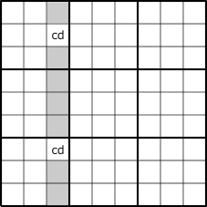
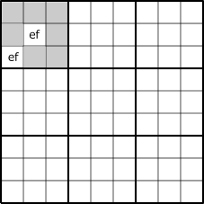
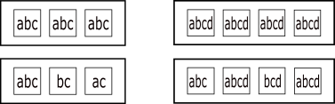
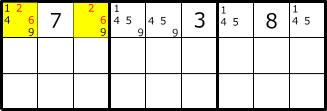
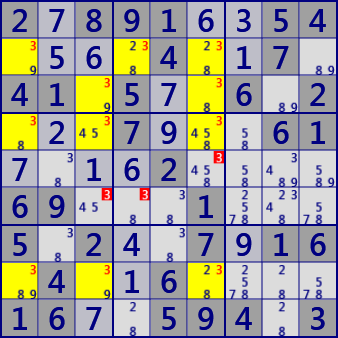

Locked
For Sudoku's advanced analysis algorithms, the concept "Locked" is important.
Locked is a limitation on the cell(s) candidate diigits, the diigit of candidate digits, and the arrangement of cells,
Candidate diigits are limited, or candidate diigits are excluded.
There are several types of Locked, and there are as many analysis algorithms as there are
Naked LockedSet
LockedSet is the simplest Locked analysis algorithm.
Focusing on n cells in a house, when these candidate diigits are #n, candidate diigits of this cell group are locked.
Exclude candidate #n from other cells in the same House. Let's call this the N-th order LockedSet.
When the diigit of cells/candidate is 5 or more, the remaining cell group of the same House is LockedSet.
It is not necessary if you want to find the numeric array on the whole board.
However, to pursue Sudoku's way of solving, is not it fun to find a big LockedSet?
Later, i will show them.
The following figure is an image of "LockedSet" of "2 cell 2 diigit".
When Locked to ab, cd, ef, these candidate can be excluded from candidate diigits of gray cells.
When a human searches for LockedSet,
the LockedSet between blocks (center in the figure below) is more difficult than it is in the same block,
but in the case of a program it is almost unchanged.



The following figure shows an image of a cell group in which LockedSets of 3 cells 3 diigits(left) and 4 cells 4 diigits (right) are established. It means that the outer frame belongs to the same house (row, column, block). The figure above is a case where each cell contains the candidate diigit in the same way. Some candidate diigits may be missing as shown in the bottom row.

Hidden LockedSet
Naked LockedSet is a case where candidate diigits clearly appear in the cell.
Hidden LockedSet is when there are other candidate digits in the cell and the group of diigits making up LockedSet is hidden.
In the following figure, the top three rows are extracted.
Focusing on candidate diigit #26 is only in r1c13,
and a Hidden LockedSet is established.
The definition of Hidden LockedSet is as follows.
For a house, when n candidate diigits are in only n cells, the diigit in this cell is locked.
Therefore, non-target candidate diigits in the same cell group are excluded.

The following figure is an example of LockedSet.
The left figure is 2-LockedSet(Naked), r6c45(block b5) are candidate diigits #38.
The right figure is 2-LockedSet(Hidden).
Focusing on c8, the diigit #16 enters only 2 cells of r19c8.
Therefore, in this two cells the remaining diigit #349 can be excluded from the candidate.

2.891..54....4..7.41.5..6.2...7...61....2....69...1...5.2..7.16.4..6....16..594.3
...857.....736.2...6...48..142..86..57......26.35..47..216.3........1.......2....
The following left figure is an example of 3-LockedSet(Hidden).
For r4c23 and r5c2 of block b4, 3-LockedSet of 3 cells and 3 diigits is established for candidate diigit #249.
The figure on the right is an example of 4-LockedSet (Naked).
Focusing on r3789c9, 4-Locked Set of 4 cells 4 diigits is established for the diigit #3459.
Also, 4 rows 4 digits 4-LockedSet(Hidden) is established for r1456c9#1678.
It is a LockedSet paired with a yellow cell group.


4......6..1..62..9.624.........8..5.1.8..7.4.......9..9...3.2..58....63..36.5...7
.8.........4..71.2.6718.39..2..3.9....38.52....5.1..3..18.4.67.4.96..8.........1.
There are 25 LockedSets in this scene of this puzzle. We also find complementary LockedSets.
- Locked Pair[2D] r6c45 #38
- Locked Pair[2D] r38c3 #39
- Locked Pair[2D] r45c7 #58
- Locked Pair[2D] r89c8 #28
- Locked Pair[2D] r4c1 r5c2 #38
- Locked Pair[2D] (hidden) r8c79 #57
- Locked Pair[2D] (hidden) r46c3 #45
- Locked Pair[2D] (hidden) r45c6 #45
- Locked Pair[2D] (hidden) r68c7 #27
- Locked Pair[2D] (hidden) r56c8 #34
- Locked Triple[3D] r238c6 #238
- Locked Triple[3D] r389c8 #289
- Locked Triple[3D] r4c7 r5c79 #589
- Locked Triple[3D] r45c7 r6c9 #578
- Locked Triple[3D] (hidden) r356c8 #349
- Locked Triple[3D] (hidden) r5c89 r6c8 #349
- Locked Triple[3D] (hidden) r5c8 r6c78 #234
- Locked Quartet[4D] r8c1368 #2389
- Locked Quartet[4D] r4c7 r5c79 r6c9 #5789
- Locked Quartet[4D] r4c7 r5c7 r6c79 #2578
- Locked Quartet[4D] (hidden) r6c3789 #2457
- Locked Quartet[4D] (hidden) r5c89 r6c78 #2349
- Locked Quartet[4D] (hidden) r5c8 r6c789 #2347
- Locked Set[5D] r4c7 r5c79 r6c79 #25789
- Locked Set[5D] (hidden) r5c89 r6c789 #23479
In addition, there is Fish to explain on another page.
- SwordFish #3 BaseSet:R348 CoverSet:C136
- JellyFish #3 BaseSet:R2348CoverSet:C1346

Fish(left:SwordFish right:JellyFish）

